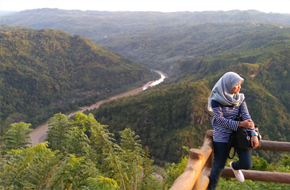

Pantai ini termasuk salah satu pantai wisata yang terkenal di Gunung Kidul. Selain memiliki pemandangan yang indah, pantai kukup ini memmiliki daya tarik tersendiri karena pasir putihnya dan di kelilingi oleh bukit-bukit.

The Mangunan Orchards
The Mangunan Orchards
Kebun Buah Mangunan Di Bantul
Mangunan adalah sebuah desa di kecamatan Dligo, kabupaten Bantul, Daerah Istimewa Yogyakarta. Desa ini memiliki potensi agrowisata berupa kebun buah, erajinan ukiran, souvenir dan alam pedesaan yang masih alami..